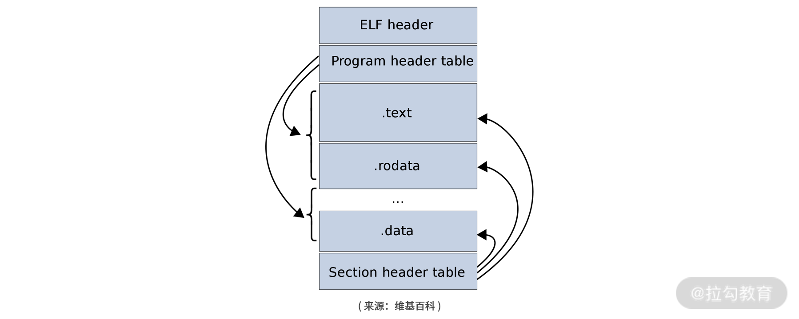
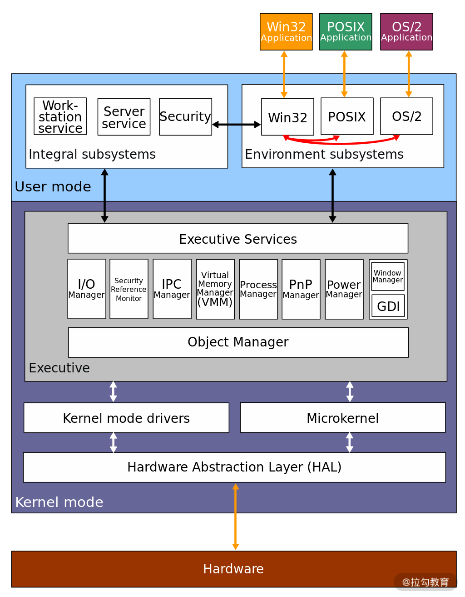

- 00 开篇词 为什么大厂面试必考操作系统？.md
- 00 课前必读 构建知识体系，可以这样做！.md
- 01 计算机是什么：“如何把程序写好”这个问题是可计算的吗？.md
- 02 程序的执行：相比 32 位，64 位的优势是什么？（上）.md
- 03 程序的执行：相比 32 位，64 位的优势是什么？（下）.md
- 04 构造复杂的程序：将一个递归函数转成非递归函数的通用方法.md
- 05 存储器分级：L1 Cache 比内存和 SSD 快多少倍？.md
- 05 (1) 加餐 练习题详解（一）.md
- 06 目录结构和文件管理指令：rm -rf 指令的作用是？.md
- 07 进程、重定向和管道指令：xargs 指令的作用是？.md
- 08 用户和权限管理指令： 请简述 Linux 权限划分的原则？.md
- 09 Linux 中的网络指令：如何查看一个域名有哪些 NS 记录？.md
- 10 软件的安装： 编译安装和包管理器安装有什么优势和劣势？.md
- 11 高级技巧之日志分析：利用 Linux 指令分析 Web 日志.md
- 12 高级技巧之集群部署：利用 Linux 指令同时在多台机器部署程序.md
- 12 (1)加餐 练习题详解（二）.md
- 13 操作系统内核：Linux 内核和 Windows 内核有什么区别？.md
- 14 用户态和内核态：用户态线程和内核态线程有什么区别？.md
- 15 中断和中断向量：Javajs 等语言为什么可以捕获到键盘输入？.md
- 16 WinMacUnixLinux 的区别和联系：为什么 Debian 漏洞排名第一还这么多人用？.md
- 16 (1)加餐 练习题详解（三）.md
- 17 进程和线程：进程的开销比线程大在了哪里？.md
- 18 锁、信号量和分布式锁：如何控制同一时间只有 2 个线程运行？.md
- 19 乐观锁、区块链：除了上锁还有哪些并发控制方法？.md
- 20 线程的调度：线程调度都有哪些方法？.md
- 21 哲学家就餐问题：什么情况下会触发饥饿和死锁？.md
- 22 进程间通信： 进程间通信都有哪些方法？.md
- 23 分析服务的特性：我的服务应该开多少个进程、多少个线程？.md
- 23 (1)加餐 练习题详解（四）.md
- 24 虚拟内存 ：一个程序最多能使用多少内存？.md
- 25 内存管理单元： 什么情况下使用大内存分页？.md
- 26 缓存置换算法： LRU 用什么数据结构实现更合理？.md
- 27 内存回收上篇：如何解决内存的循环引用问题？.md
- 28 内存回收下篇：三色标记-清除算法是怎么回事？.md
- 28 (1)加餐 练习题详解（五）.md
- 29 Linux 下的各个目录有什么作用？.md
- 30 文件系统的底层实现：FAT、NTFS 和 Ext3 有什么区别？.md
- 31 数据库文件系统实例：MySQL 中 B 树和 B+ 树有什么区别？.md
- 32 HDFS 介绍：分布式文件系统是怎么回事？.md
- 32 (1)加餐 练习题详解（六）.md
- 33 互联网协议群（TCPIP）：多路复用是怎么回事？.md
- 34 UDP 协议：UDP 和 TCP 相比快在哪里？.md
- 35 Linux 的 IO 模式：selectpollepoll 有什么区别？.md
- 36 公私钥体系和网络安全：什么是中间人攻击？.md
- 36 (1)加餐 练习题详解（七）.md
- 37 虚拟化技术介绍：VMware 和 Docker 的区别？.md
- 38 容器编排技术：如何利用 K8s 和 Docker Swarm 管理微服务？.md
- 39 Linux 架构优秀在哪里.md
- 40 商业操作系统：电商操作系统是不是一个噱头？.md
- 40 (1)加餐 练习题详解（八）.md
- 41 结束语 论程序员的发展——信仰、选择和博弈.md
13 操作系统内核：Linux 内核和 Windows 内核有什么区别？
Windows 和 Linux 是当今两款最主流的服务器操作系统产品，都拥有广泛的用户和信徒。Windows 通过强大的商业运作，驱动了大量优秀人才加盟到它的开发团队中；Linux 通过社区产品的魅力吸引着世界上大量的顶级程序员为它贡献源代码、解答问题。两者在服务器市场上竞争激烈，不分伯仲，但也存在互相扶持的关系。
我觉得，两个操作系统各有千秋。每次学习两个操作系统的技术知识，都让我切实地感受到编程真的是一门艺术，而学习编程就像是在探索艺术。
今天我们继续从一道面试题目“ Linux 内核和 Windows 内核有什么区别？”入手，去了解这两个操作系统内核的设计，帮助你学习操作系统中最核心的一个概念——内核，并希望这些知识可以伴随你日后的每个系统设计。
什么是内核？
说到操作系统，就必须说内核。内核是操作系统中应用连接硬件设备的桥梁。
内核的能力
对于一个现代的操作系统来说，它的内核至少应该提供以下 4 种基本能力：
- 管理进程、线程（决定哪个进程、线程使用 CPU）；
- 管理内存（决定内存用来做什么）；
- 连接硬件设备（为进程、和设备间提供通信能力）；
- 提供系统调用（接收进程发送来的系统调用）。
操作系统分层
从上面 4 种能力来看操作系统和内核之间的关系，通常可以把操作系统分成 3 层，最底层的硬件设备抽象、中间的内核和最上层的应用。
内核是如何工作的？
为了帮助你理解什么是内核，请你先思考一个问题：进程和内核的关系，是不是像浏览器请求服务端服务？你可以先自己思考，然后在留言区写下你此时此刻对这个问题的认知，等学完“模块三”再反过头来回顾这个知识，相信你定会产生新的理解。
接下来，我们先一起分析一下这个问题。
内核权限非常高，它可以管理进程、可以直接访问所有的内存，因此确实需要和进程之间有一定的隔离。这个隔离用类似请求/响应的模型，非常符合常理。

但不同的是在浏览器、服务端模型中，浏览器和服务端是用不同的机器在执行，因此不需要共享一个 CPU。但是在进程调用内核的过程中，这里是存在资源共享的。
- 比如，一个机器有 4 个 CPU，不可能让内核用一个 CPU，其他进程用剩下的 CPU。这样太浪费资源了。
- 再比如，进程向内核请求 100M 的内存，内核把 100M 的数据传回去。 这个模型不可行，因为传输太慢了。
所以，这里多数操作系统的设计都遵循一个原则：进程向内核发起一个请求，然后将 CPU 执行权限让出给内核。内核接手 CPU 执行权限，然后完成请求，再转让出 CPU 执行权限给调用进程。
关于这块知识，我们会在“ 14 |户态和内核态：用户态线程和内核态线程有什么区别？”中详细讨论。
Linux 的设计
Linux 操作系统第一版是1991 年林纳斯托·瓦兹（一个芬兰的小伙子，当时 22 岁）用 C 语音写的。 写完之后他在网络上发布了 Linux 内核的源代码。又经过了 3 年的努力，在 1994 年发布了完整的核心 Version 1.0。
说到 Linux 内核设计，这里有很多有意思的名词。大多数听起来复杂、专业，但是理解起来其实很简单。接下来我们一一讨论。
- Multitask and SMP（Symmetric multiprocessing）
MultiTask 指多任务，Linux 是一个多任务的操作系统。多任务就是多个任务可以同时执行，这里的“同时”并不是要求并发，而是在一段时间内可以执行多个任务。当然 Linux 支持并发。
SMP 指对称多处理。其实是说 Linux 下每个处理器的地位是相等的，内存对多个处理器来说是共享的，每个处理器都可以访问完整的内存和硬件资源。 这个特点决定了在 Linux 上不会存在一个特定的处理器处理用户程序或者内核程序，它们可以被分配到任何一个处理器上执行。
- ELF（Executable and Linkable Format）

这个名词翻译过来叫作可执行文件链接格式。这是一种从 Unix 继承而来的可执行文件的存储格式。我们可以看到 ELF 中把文件分成了一个个分段（Segment），每个段都有自己的作用。如果想要深入了解这块知识，会涉及部分编译原理的知识，如果你感兴趣可以去网上多查些资料或者去留言区我们一起讨论。
- Monolithic Kernel
这个名词翻译过来就是宏内核，宏内核反义词就是 Microkernel ，微内核的意思。Linux 是宏内核架构，这说明 Linux 的内核是一个完整的可执行程序，且内核用最高权限来运行。宏内核的特点就是有很多程序会打包在内核中，比如，文件系统、驱动、内存管理等。当然这并不是说，每次安装驱动都需要重新编译内核，现在 Linux 也可以动态加载内核模块。所以哪些模块在内核层，哪些模块在用户层，这是一种系统层的拆分，并不是很强的物理隔离。
与宏内核对应，接下来说说微内核，内核只保留最基本的能力。比如进程调度、虚拟内存、中断。多数应用，甚至包括驱动程序、文件系统，是在用户空间管理的。

学到这里，你可能会问：在内核层和在用户层有什么区别吗？
感觉分层其实差不多。 我这里说一个很大的区别，比如说驱动程序是需要频繁调用底层能力的，如果在内核中，性能肯定会好很多。对于微内核设计，驱动在内核外，驱动和硬件设备交互就需要频繁做内核态的切换。
当然微内核也有它的好处，比如说微内核体积更小、可移植性更强。不过我认为，随着计算能力、存储技术越来越发达，体积小、安装快已经不能算是一个很大的优势了。现在更重要的是如何有效利用硬件设备的性能。
之所以这么思考，也可能因为我是带着现代的目光回望当时人们对内核的评判，事实上，当时 Linux 团队也因此争论过很长一段时间。 但是我觉得历史往往是螺旋上升的，说不定将来性能发展到了一个新的阶段，像微内核的灵活性、可以提供强大的抽象能力这样的特点，又重新受到人们的重视。
还有一种就是混合类型内核。 混合类型的特点就是架构像微内核，内核中会有一个最小版本的内核，其他功能会在这个能力上搭建。但是实现的时候，是用宏内核的方式实现的，就是内核被做成了一个完整的程序，大部分功能都包含在内核中。就是在宏内核之内有抽象出了一个微内核。
上面我们大体介绍了内核几个重要的特性，有关进程、内存、虚拟化等特性，我们会在后面几个模块中逐步讨论。
Window 设计
接下来我们说说 Windows 的设计，Windows 和 Linux 的设计有很大程度的相似性。Windows也有内核，它的内核是 C/C++ 写的。准确地说，Windows 有两个内核版本。一个是早期的Windows 9x 内核，早期的 Win95, Win98 都是这个内核。我们今天用的 Windows 7, Windows 10 是另一个内核，叫作 Windows NT。NT 指的是 New Technology。接下来我们讨论的都是 NT 版本的内核。
下面我找到一张 Windows 内核架构的图片给你一个直观感受。

Windows 同样支持 Multitask 和 SMP（对称多处理）。Windows 的内核设计属于混合类型。你可以看到内核中有一个 Microkernel 模块。而整个内核实现又像宏内核一样，含有的能力非常多，是一个完整的整体。
Windows 下也有自己的可执行文件格式，这个格式叫作 Portable Executable（PE），也就是可移植执行文件，扩展名通常是.exe、.dll、.sys等。
PE 文件的结构和 ELF 结构有很多相通的地方，我找到了一张图片帮助你更直观地理解。 因为这部分知识涉及编译原理，我这里就不详细介绍了，感兴趣同学可以在留言区和大家一起讨论，或者查阅更多资料。

Windows 还有很多独特的能力，比如 Hyper-V 虚拟化技术，有关虚拟化技术我们将在“模块八：虚拟化和其他”中详细讲解。
总结
这一讲我们学习了内核的基础知识，包括内核的作用、整体架构以及 3 种内核类型（宏内核、微内核和混合类型内核）。内核很小（微内核）方便移植，因为体积小、安装快；内核大（宏内核），方便优化性能，毕竟内核更了解计算机中的资源。我们还学习了操作系统对执行文件的抽象，但是没有很深入讨论，内核部分有很多知识是需要在后面的几个模块中体现的，比如进程、文件、内存相关的能力等。
那么通过这一讲的学习，你现在可以来回答本节关联的面试题目：Linux 内核和 Windows 内核有什么区别？
老规矩，请你先在脑海里构思下给面试官的表述，并把你的思考写在留言区，然后再来看我接下来的分析。
【解析】 Windows 有两个内核，最新的是 NT 内核，目前主流的 Windows 产品都是 NT 内核。NT 内核和 Linux 内核非常相似，没有太大的结构化差异。
从整体设计上来看，Linux 是宏内核，NT 内核属于混合型内核。和微内核不同，宏内核和混合类型内核从实现上来看是一个完整的程序。只不过混合类型内核内部也抽象出了微内核的概念，从内核内部看混合型内核的架构更像微内核。
另外 NT 内核和 Linux 内核还存在着许多其他的差异，比如：
- Linux 内核是一个开源的内核；
- 它们支持的可执行文件格式不同；
- 它们用到的虚拟化技术不同。
关于这块知识就不展开说了， 我们会在后续的“进程、内存、虚拟化”等模块中仔细讨论。